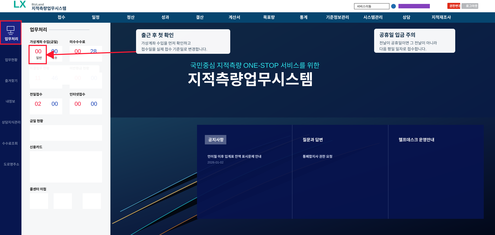

출근하면 가장 먼저 퇴근한 사이 가상계좌로 수입이 되었는지 확인합니다. 전날 입금 내역을 확인한 뒤,
접수창 오른쪽 상단의 접수일을 실제 접수 기준일로 변경해 줍니다.
- 업무처리 화면에서 가상계좌 수입 금일 현황을 확인합니다.
- 가상계좌 수입 창에서 수입일자를 전날로 맞춘 뒤 검색 버튼을 눌러 입금내역을 확인합니다.
- 전날 입금이 확인되면 해당 건을 접수 처리하기 전에 접수일을 변경합니다.
- 전날이 공휴일인데 입금이 되었으면, 그 전날이 아니라 다음날인 평일 일자로 접수합니다.

업무처리 화면에서 가상계좌 수입을 누른 뒤, 수입일자를 전날로 검색해 입금내역을 확인합니다.
의뢰 내용과 토지 정보를 확인한 뒤 측량 종목, 소재지, 신청인 정보를 맞춰 접수합니다.
- 토지 소재지, 지번, 지목, 면적을 신청 내용과 대조합니다.
- 경계복원, 분할, 현황, 등록전환 등 측량 종목을 정확히 선택합니다.
- 첨부서류와 위임 여부를 확인한 뒤 접수번호를 생성합니다.
- 접수 후 의뢰인에게 진행 절차와 예상 일정을 안내합니다.
측량 접수 전 소유자, 공유자, 대리 신청 권한을 확인해 접수 오류와 민원을 줄입니다.
- 토지대장과 등기사항의 소유자 성명, 주소, 지분을 대조합니다.
- 대리인이 신청하는 경우 위임장, 신분증, 인감 또는 서명 요건을 확인합니다.
- 공유 토지는 공유자 동의 필요 여부와 신청 가능 범위를 확인합니다.
- 소유자 정보가 다르면 정정 또는 추가 확인 후 접수합니다.
측량 종목과 필지 조건에 따라 수수료를 산정하고, 감면 또는 반환 가능성을 함께 확인합니다.
- 측량 종목, 필지 수, 면적, 지역 조건에 따라 수수료를 산정합니다.
- 감면 대상 여부와 증빙자료를 확인합니다.
- 가상계좌, 카드, 현금 등 납부 방법을 의뢰인에게 안내합니다.
- 입금 확인 후 접수 상태와 청구 내역을 정리합니다.
접수와 수수료 확인이 끝나면 담당자, 현장일, 입회자 연락 사항을 정리해 일정을 배정합니다.
- 담당자 업무량과 현장 위치를 고려해 측량 일정을 배정합니다.
- 의뢰인과 입회자에게 일시, 장소, 준비사항을 안내합니다.
- 현장 접근, 우천, 경계 분쟁 가능성을 미리 기록합니다.
- 일정 변경이 생기면 시스템 상태와 의뢰인 안내 내용을 함께 수정합니다.